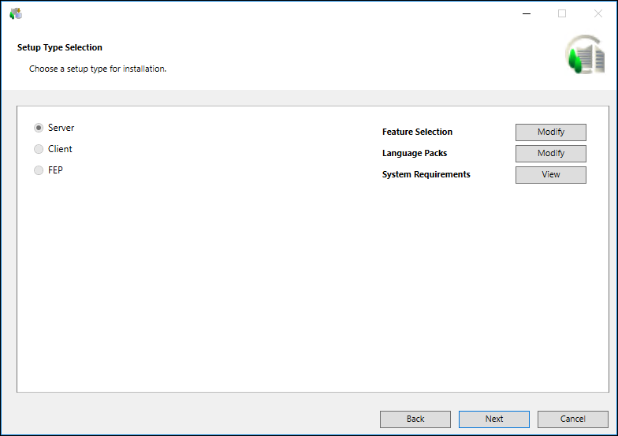
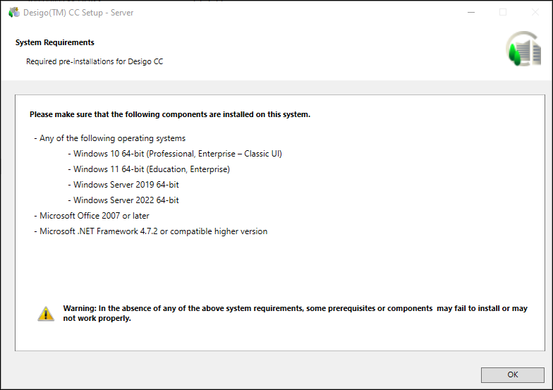

Verify the Extensions, Language Packs, and System Requirements
- In the Setup Type Selection dialog box, you cannot change the already installed setup type. Proceed to modify the feature selection, language packs. You can also review the system requirements.
- (Optional and required only when you want to install and configure IIS on the selected setup type) Verify that the checkbox for IIS configuration is selected. Alternatively, you can deselect it.
The checkbox displays only when no IIS component is installed on your machine. Thus, the configuration of IIS settings are automated only if when they no IIS settings are configured already. However, if any IIS component is already installed, a warning message displays informing you to manually configure IIS. See Manually Install and Configure IIS on Different OS Types in Additional Installer Procedures.
If all required IIS components are correctly installed and configured, an info message displays and you can proceed with installation.
In both cases, when no IIS component is installed or when all IIS components are correctly installed and configured, the prerequisite ARR is installed or is upgraded. - If an already installed extension is missing from the installation media, then Next button is disabled and the error message displays and then upgrade process is aborted. You must add the missing extensions in order to proceed with the upgrade process.

- Click Modify adjacent to Feature Selection to add any missing extensions or new extensions during upgrade. The Feature Selection dialog box displays all the extension suites, along with the extensions available on the software distribution.
- You cannot modify the already installed extensions. By default, the extensions that are already installed on the installed setup type are selected and disabled.
- You can select new extensions for installation during the upgrade process. Click Select All to install to select all the extension suites and modules that are available on the distribution media, but not yet installed or select individual extension/extension suit as required.
Selecting an extension automatically selects the parent extension. - Note that the mandatory extension and its parent extension (mandatory or non-mandatory) are not displayed for selection/deselection in the Feature Selection dialog box. However, they are listed later in the Ready to Install the Program dialog box and are always installed/upgraded.
- Click Add EM to select and add extensions that are available at another location other than the Installation media from a valid path ....\EM\[EM Name] using the Browse For Folder dialog box.
When you select EM folder, all extensions available in this folder are included in the installation. If you select a single extension, make sure to select its parent extension, otherwise, the newly selected extension (child) cannot be added and a warning displays.
The Installer detects and adds the language pack for the newly added extension if Languages folder is kept parallel to the EM folder.
It also automatically adds the extension suite for the selected extension, if the extension suite is not listed. Click OK to return to Feature Selection dialog box. - You can also manually install/upgrade an extension after the upgrade is completed.
For more information, see Install or Update an Extension in Additional Installer Procedures or
Install or Upgrade an Extension using the Distribution Media Using Custom Installation in Additional Installer Procedures. - Click OK to return to the Setup Type Selection dialog box.

An asterisk (*) displays next to the extension that are IEC62443-4-2 certified in the Feature Selection dialog box.
If all mandatory and non-mandatory extensions are IEC certified, a message "Platform and EMs (*) adhere to the IEC 62443-4-2 standard" displays in the Feature Selection dialog box.
If any of the mandatory extension is not IEC certified, a message “EMs (*) adhere to the IEC 62443-4-2 standard” displays in the Feature Selection dialog box.
If any of the non-mandatory extension is not IEC certified, a message "Platform adheres to the IEC 62443-4-2 standard" displays in the Feature Selection dialog box.

- Click Modify adjacent to Language Packs. In addition to the already installed language packs, the Language Packs dialog box also displays all the language packs available in the Languages folder located at the path …\InstallFiles on the distribution media.
- You cannot modify the already installed language packs. By default, the language packs that are already installed on the installed setup type are selected and disabled.
NOTE: If the already installed language pack is missing from software distribution then a warning displays. However, you can continue with upgrade process. You can update such a Language Pack after installation. (See, Install or Upgrade a Language Pack using the Distribution Media in Additional Installer Procedures.
Do one of the following to determine which language packs you want to have installed: - From the Language Pack Name column, select only the required language packs for installation.
The Installer calculates and displays the disk space (in MB) required for each selected language pack, as well as the total disk space required for all selected language packs. The total disk space is added to the total disk space for the installation directory.
NOTE: All required language packs must be installed before a customer project is created using SMC. Once you create the customer project, you can install additional language packs. However, you cannot add them to the available project languages. For adding a new language pack, you must create another project. - For more information, see Language Packs and the List of Supported Languages.
- Click OK.

- Click View adjacent to System Requirements.
- The System Requirements dialog box displays the required software that is not included in the installation program.
- Click OK.

- Click Next.